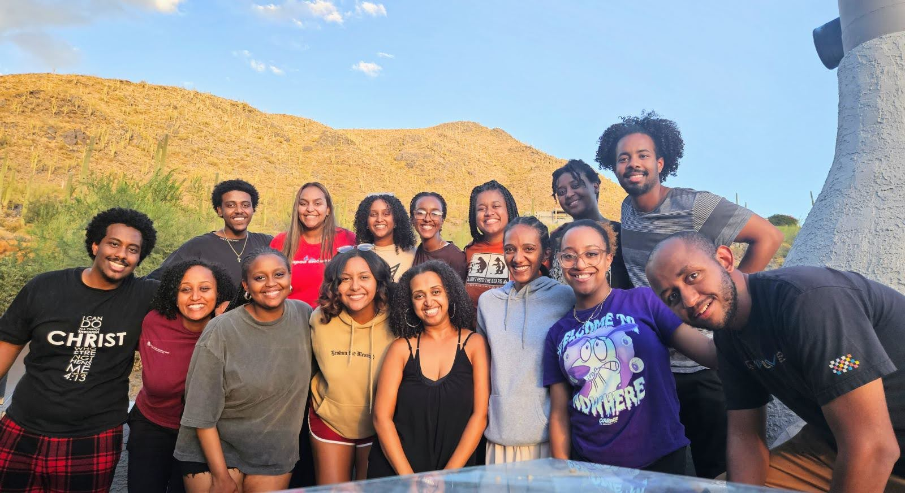
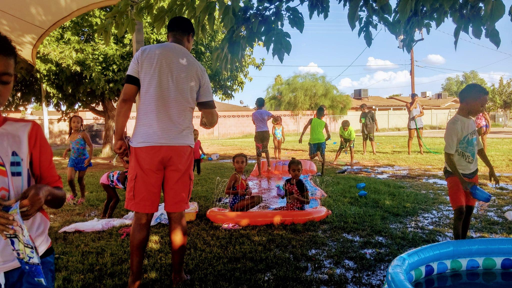

Young Adults
Worship, prayer, Scripture, and friendship for a faith that reaches every part of life.
Discover the community FireStarters
FireStarters

A young-adult ministry in Phoenix
We are a community pursuing the presence of Jesus, building one another up, and putting our faith to work in the lives of children and across our city.
Who we are
FireStarters is a young-adult community centered on Scripture, worship, prayer, fasting, and genuine fellowship. We want every person to know Jesus deeply and live with courage.
That life together moves outward. Our team leads and serves the children of our church, invests in emerging leaders, and builds relationships with ministries throughout Arizona.
Where we serve
Worship, prayer, Scripture, and friendship for a faith that reaches every part of life.
Discover the community
A joyful, nurturing place where children learn the story of Jesus and experience his love.
Explore children’s ministryConnected in mission
We share leadership and friendship beyond our weekly gatherings—strengthening churches, caring for people, encouraging leaders, and collaborating for the good of our city.
Encouraging and equipping immigrant churches and bicultural leaders through friendship, prayer, worship, and shared leadership.
Visit Daniel InitiativeFounded by Rev. Dr. Sanghoon Yoo, The Faithful City helps develop resilient leaders and communities of belonging through trauma-informed care.
Visit The Faithful CityA wider family of churches and ministry leaders learning, praying, and collaborating to make Jesus visible throughout Arizona.
Visit Surge Network
Since 2015
We gather because we believe time with Jesus changes us. We serve because his love sends us toward people—with humility, joy, and a willingness to lead.
Learn what guides us“A great multitude that no one could count, from every nation, tribe, people and language, standing before the throne.”Revelation 7:9
Come as you are